The central lake, simplified.
Use Varenna as the anchor, ferries as the organizing principle, and choose only the villas that fit naturally into the day.
Lake Como in One Minute
The essential Varenna, ferry and villa strategy.
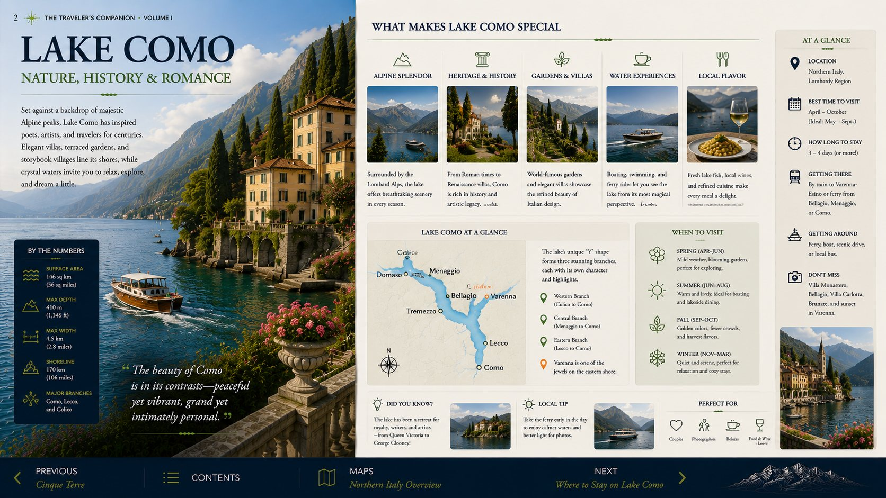
Where to Stay
The chapter’s accommodation recommendations and why Varenna is the right base.
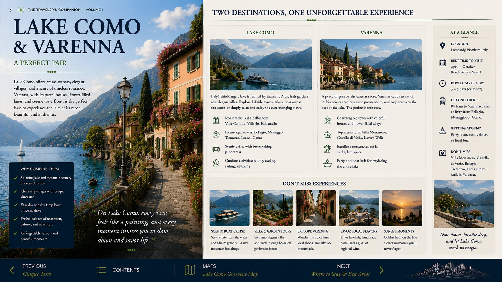
Perfect Day One
Arrival, Varenna and a relaxed lakeside evening.

Varenna
The promenade, old lanes and your calm home base.
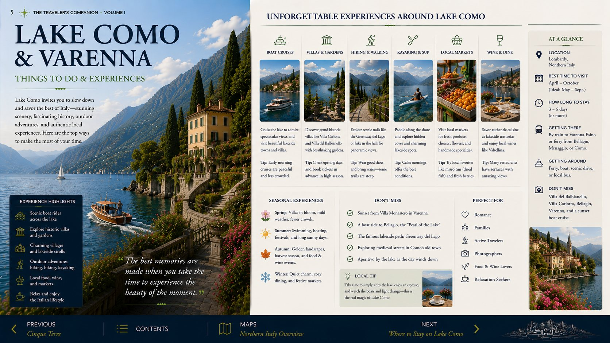
Villa Monastero
Gardens, lake views and the most efficient major sight.
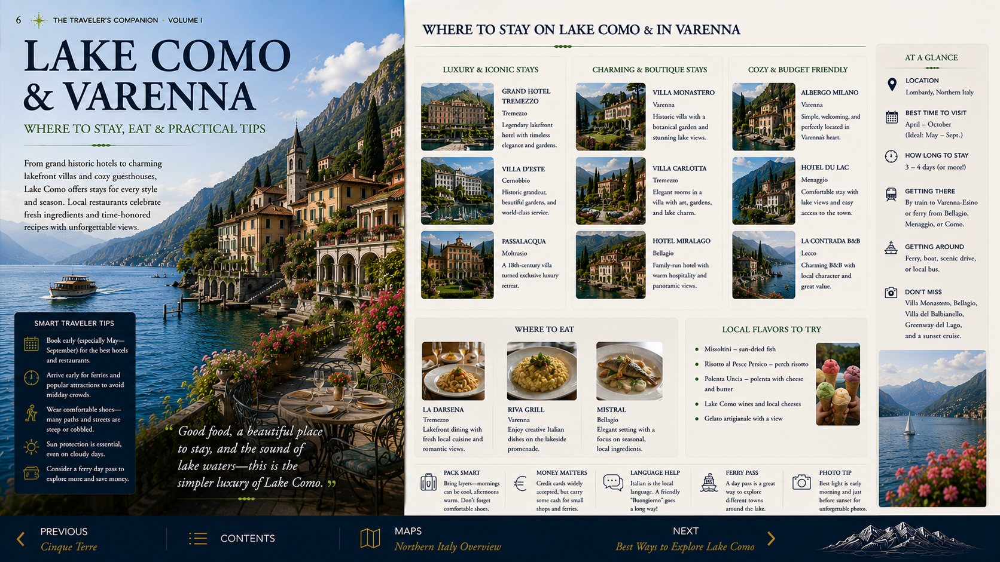
Bellagio
A compact ferry visit focused on atmosphere and lunch.
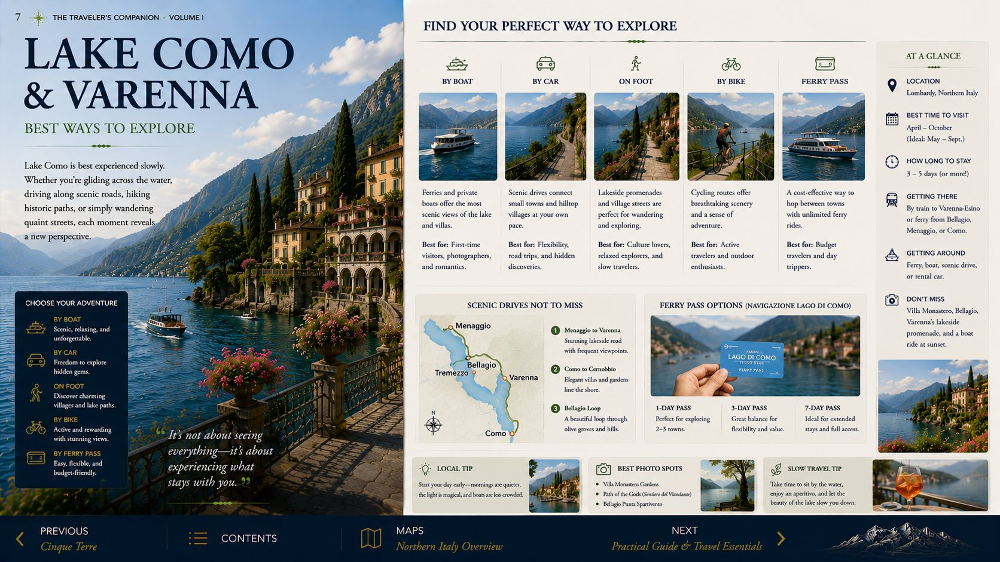
Villa Carlotta
Gardens and art as the strongest optional second villa.

Villa del Balbianello
A spectacular but less efficient option for a short stay.

Ferry Guide
The central-lake triangle and practical return timing.

Villages of the Central Lake
Varenna, Bellagio and Menaggio compared.
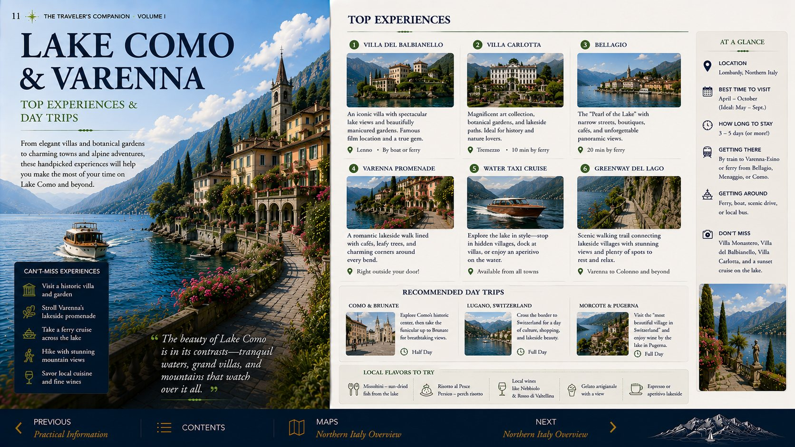
Walks & Viewpoints
Gentle lakeside walks and scenic overlooks.
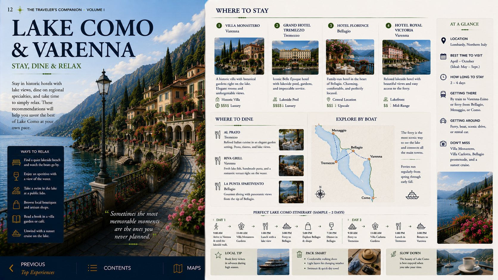
Local Cuisine
Lake fish, risotto, polenta and regional specialties.
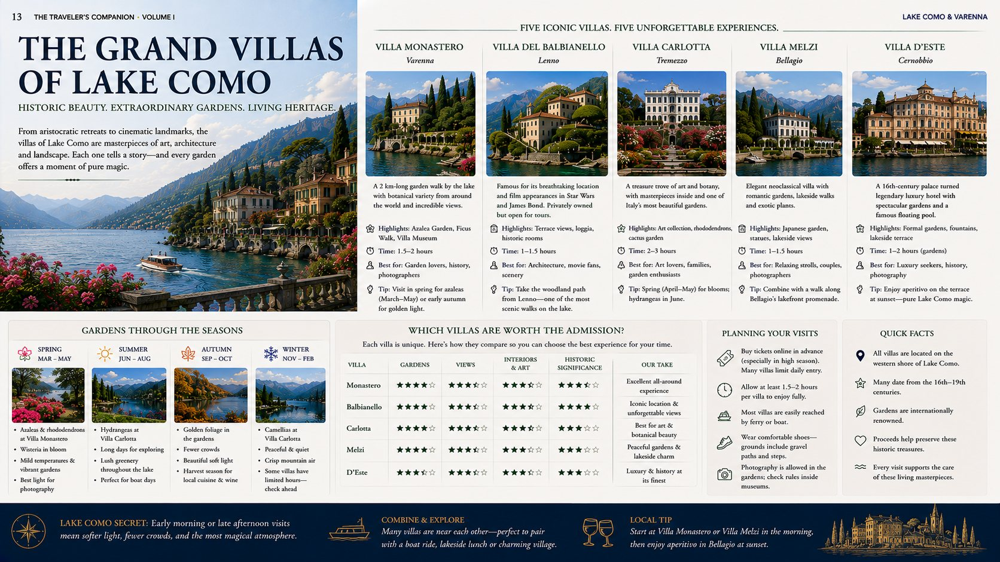
Restaurant Recommendations
Curated dining in Varenna and the central lake.
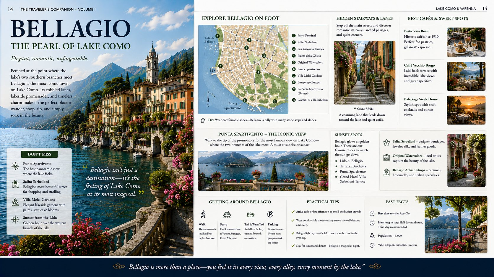
Practical Lake Como
Ferries, parking, timing and crowd strategy.
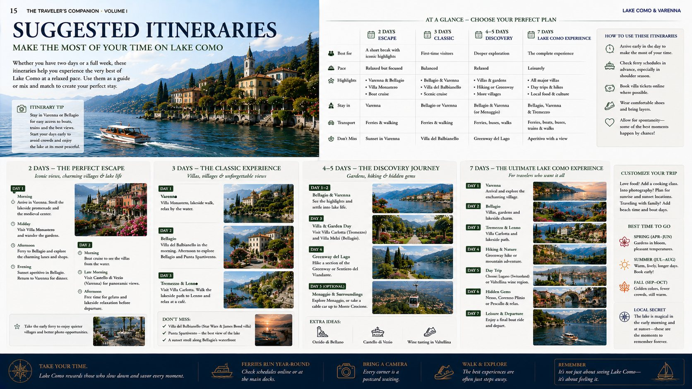
Photography Guide
Morning light, blue hour and garden viewpoints.
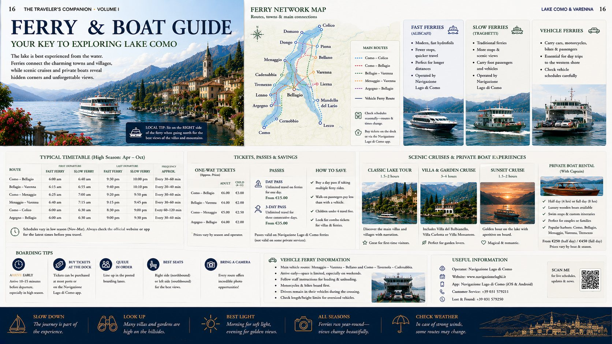
Don’t Miss
The experiences you would regret skipping.
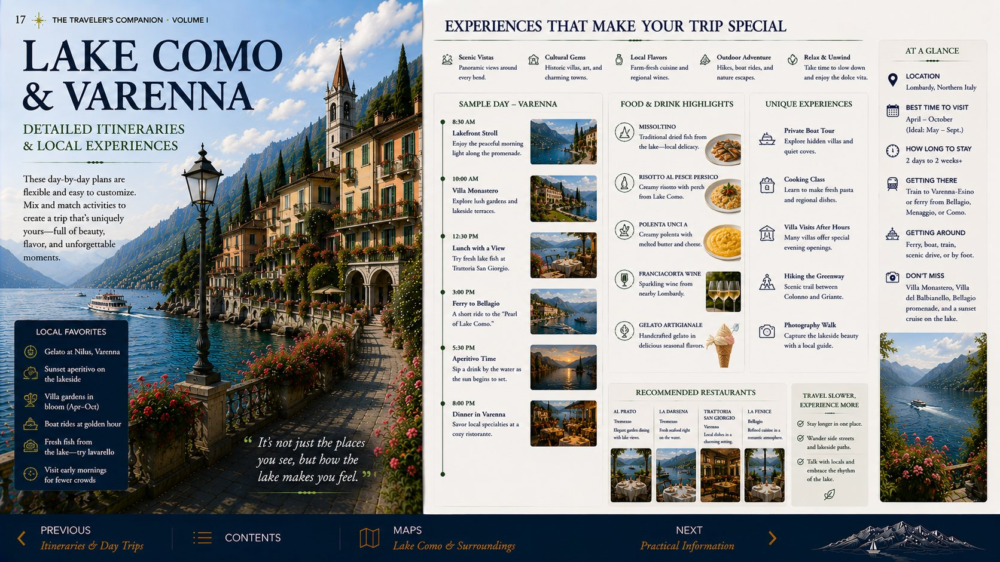
Before You Leave for Lake Maggiore
Departure timing and the drive to Stresa.
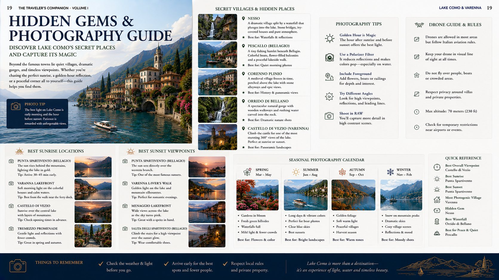